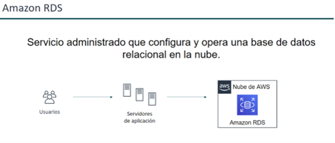

Introducción
La administración de bases de datos en la nube implica la gestión eficiente de sistemas de bases de datos alojados en plataformas de computación en la nube, como AWS, Microsoft Azure y Google Cloud. A diferencia de la administración tradicional de bases de datos, donde los administradores gestionaban tanto el hardware como el software localmente, en la nube muchas de estas responsabilidades son asumidas por los proveedores de servicios, lo que permite a los administradores centrarse en tareas más estratégicas como la optimización del rendimiento, la seguridad y la disponibilidad de los datos.
La administración en la nube incluye la configuración inicial, la gestión de usuarios y permisos, la monitorización continua del rendimiento, la implementación de estrategias de escalabilidad automática y la planificación de la recuperación ante desastres. Los servicios gestionados en la nube simplifican estos procesos, automatizando tareas como la aplicación de parches, copias de seguridad y actualizaciones, lo que permite a las organizaciones aprovechar las capacidades de la nube para aumentar la eficiencia operativa y reducir los costes asociados con la administración de bases de datos.
El despliegue de una base de datos relacional en la nube se refiere al proceso de instalar, configurar y ejecutar una base de datos relacional (RDBMS) en una infraestructura de computación en la nube. En lugar de alojar la base de datos en servidores locales (on-premise), se utiliza una plataforma en la nube, lo que ofrece ventajas en términos de escalabilidad, flexibilidad y costes operativos.
De las bases de datos en las instalaciones a las bases de datos en la nube

Cuando la base de datos está en las instalaciones, el administrador de la base de datos es responsable de todo. Las tareas de administración de la base de datos incluyen la optimización de las aplicaciones y las consultas, la configuración del hardware, la aplicación de parches al hardware, la configuración y alimentación de las redes y la gestión de la calefacción, la ventilación y el aire acondicionado.
Si se cambia a una base de datos que se ejecuta en una instancia de Amazon Elastic Compute Cloud (Amazon EC2), ya no habrá que administrar el hardware subyacente ni encargarse de las operaciones del centro de datos. Sin embargo, habrá que ocuparse de la aplicación de parches al SO y todas las operaciones de software y copia de seguridad.
Al instalar una base de datos en Amazon RDS o Amazon Aurora, se reducen las responsabilidades administrativas. Si se migra a la nube, se puede escalar la base de datos, habilitar la alta disponibilidad, administrar las copias de seguridad y aplicar parches automáticamente. Así, los clientes pueden centrarse en lo que realmente importa: optimizar su aplicación.
Cuándo usar Amazon RDS
RDS es la solución de base de datos relacional convencional, pero a veces no será lo más adecuado según necesidades, y en AWS hay servicios más específicos como DynamoDB (NoSQL) y Redshift (Datawarehouse):

Despliegue de Bases de Datos Relacionales en la nube
El despliegue de una base de datos relacional en la nube se refiere al proceso de instalar, configurar y ejecutar una base de datos relacional (RDBMS) en una infraestructura de computación en la nube, como por ejemplo AWS. Para llevar a cabo el despliegue de una BD relacional en la nube, utilizaremos servicios como RDS y Aurora.
Amazon RDS

Amazon RDS es un servicio administrado que configura y opera una base de datos relacional en la nube. Esto significa que ofrece una capa sobre la base de datos relacional que gestiona muchas de las funciones que normalmente lleva a cabo un DBA (DataBase Administrator). El objetivo es reducir el tiempo que un DBA emplea haciendo trabajo de administración, permitiendo que se pueda centrar en otras tareas.
Para hacer frente a los desafíos de ejecutar una base de datos relacional independiente y no administrada, AWS proporciona un servicio que configura, opera y escala la base de datos relacional sin ninguna administración continua. Amazon RDS proporciona una capacidad rentable y de tamaño modificable, al tiempo que automatiza las tareas administrativas que consumen mucho tiempo.
Amazon RDS habilita estas tareas para que el usuario pueda centrarse en las aplicaciones y proporcionarles el rendimiento, la alta disponibilidad, la seguridad y la compatibilidad que necesitan. Con Amazon RDS, los usuarios pueden centrarse principalmente en los datos y en optimizar sus aplicaciones.
Instancias de Bases de Datos
Una instancia de base de datos es un entorno de base de datos aislado en la Nube de AWS. El componente básico de Amazon RDS es la instancia de base de datos.
Una instancia de base de datos puede contener una o más bases de datos (database, tablespace, etc.) creadas por el usuario. Se puede acceder a una instancia de base de datos utilizando las mismas herramientas y aplicaciones que se utilizan con una instancia de base de datos independiente, como Workbench en el caso de MySQL.
Se puede crear y modificar una instancia de base de datos mediante AWS Command Line Interface (AWS CLI), la API de Amazon RDS o la AWS Management Console.
Ya hemos utilizado dos de estos métodos previamente. Más adelante lo podemos hacer también con la API.
Ejemplo de uso de varias instancias: una organización con una base de datos de empleados podría tener tres instancias diferentes: producción (utilizada para contener datos en tiempo real), pre-producción (utilizada para probar nuevas funcionalidades antes de la puesta en producción) y desarrollo (utilizada por los desarrolladores de bases de datos para crear nuevas funcionalidades).
Motores de Bases de Datos
Un motor de base de datos es el software de base de datos relacional específico que se ejecuta en la instancia de base de datos. Amazon RDS admite actualmente los siguientes motores:
- MySQL (desde la versión 5.7, en adelante)
- Amazon Aurora
- MariaDB (desde la versión 10.5, en adelante)
- Microsoft SQL Server (desde la versión 2016, en adelante)
- Oracle Database (19c y 21c)
- PostgreSQL (desde la versión 11, en adelante)
- IBM Db2 (11.5)
Cada motor de base de datos cuenta con sus propias características compatibles y cada versión de un motor puede incluir características específicas. En general, AWS permite las mismas versiones que el vendedor. La compatibilidad con las características de Amazon RDS varía según las Regiones de AWS y las versiones específicas de cada motor de base de datos. Para comprobar la compatibilidad de características en las distintas versiones y regiones, es posible consultar el siguiente enlace: Funciones admitidas en Amazon RDS por Región de AWS y el motor de base de datos.
Tanto Oracle como SQL Server requieren una licencia para ser utilizadas y esto se aplica tanto a las instancias RDS como a las bases de datos en las instalaciones (on-premises). RDS ofrece dos modelos diferentes de licencias para permitir a los clientes elegir:
- Licence-included: pagas mensualmente una cuota a AWS para cubrir el coste de la licencia.
- Bring-your-own-license: obtienes las licencias de tus bases de datos directamente del vendedor (Oracle o Microsoft).
Además, cada motor de base de datos tiene un conjunto de parámetros en un grupo de parámetros de base de datos que controlan el comportamiento de las bases de datos que administra.
Clase de instancia de Base de Datos
Una clase de instancia de base de datos determina la capacidad de cómputo y de memoria de una instancia de base de datos. Una clase de instancia de base de datos consta tanto del tipo de instancia de base de datos como del tamaño. Cada tipo de instancia ofrece diferentes capacidades de computación, memoria y almacenamiento. Por ejemplo, db.m6g es un tipo de instancia de base de datos de uso general con tecnología de procesadores Graviton2 de AWS. Dentro del tipo de instancia db.m6g, db.m6g.2xlarge es una clase de instancia de base de datos.
Una cosa a tener en cuenta es la licencia de Oracle y SQL Server. Ambos tienen una licencia en un per-core model, donde pagas según el número de núcleos que utilizas. En ese caso, podría ser más eficiente a nivel de coste, elegir una clase de instancia con un ratio con mucha más memoria que CPU, para poder optimizar el coste que supone la licencia.
Desde la consola de AWS, se puede seleccionar la instancia de base de datos que mejor se adapte a las necesidades de cada caso. Si las necesidades cambian con el tiempo, es posible cambiar las instancias de base de datos. Para obtener información, se puede consultar el siguiente enlace: (Clases de instancia de base de datos)[https://docs.aws.amazon.com/AmazonRDS/latest/UserGuide/Concepts.DBInstanceClass.html].
3.1.4. Almacenamiento de instancias de base de datos Amazon EBS (Elastic Block Store) ofrece volúmenes de almacenamiento permanente de nivel de bloque que se pueden adjuntar a una instancia en ejecución. Es decir, los volúmenes de EBS son unidades de almacenamiento que persisten incluso después de que la instancia que los utiliza se apague o se termine. Cuando un volumen de EBS se adjunta a una instancia, esta lo puede utilizar como un disco duro, permitiendo que la instancia escriba o lea datos del volumen. Esto puede hacerse mientras la instancia está funcionando, por lo que si es necesario, es posible adjuntar o separar (desconectar) volúmenes sin detener la instancia. El almacenamiento de instancias de base de datos viene en los siguientes tipos: • Uso general (SSD). Llamada gp2 y gp3. Perfecto en entornos de pruebas y de desarrollo, para aprovisionamiento de rendimientos extremos. • IOPS aprovisionadas (PIOPS) io1 y i io2 block express. Diseñadas para cargas de trabajo de alto rendimiento de E/S y baja latencia. Para sistemas OLTP. • Magnético (obsoleta, se mantiene por compatibilidad hacia atrás). Antigua y menos costosa, pero menor rendimiento que las anteriores.
Los tipos de almacenamiento difieren en características de rendimiento y precio. Cada usuario puede adaptar el rendimiento y el costo del almacenamiento a las necesidades de su base de datos. Cada instancia de base de datos tiene requisitos de almacenamiento mínimos y máximos en función del tipo de almacenamiento y del motor de base de datos que admita. Es importante tener suficiente almacenamiento para que las bases de datos tengan espacio para crecer. Además, un almacenamiento suficiente garantiza que las funciones del motor de base de datos tengan espacio para escribir contenido o registrar entradas. Para obtener más información, se recomienda consultar el siguiente enlace: Almacenamiento de instancias de base de datos de Amazon RDS.
3.1.5. Amazon Virtual Private Cloud (Amazon VPC) Una instancia de base de datos puede ejecutarse en una nube virtual privada (VPC) utilizando el servicio Amazon Virtual Private Cloud (Amazon VPC). Cuando se utiliza una VPC, se pueden controlar todos los aspectos del entorno de red virtual. Es posible elegir el rango de direcciones IP, crear subredes y configurar listas de enrutamiento y control de acceso. La funcionalidad básica de Amazon RDS es la misma, tanto si se ejecuta en una VPC como si no. Amazon RDS administra las copias de seguridad, la aplicación de parches de software, la detección automática de errores y la recuperación. Es posible ejecutar la instancia de base de datos en una VPC sin ningún coste adicional. Para obtener más información acerca del uso de Amazon VPC con RDS, adjuntamos el siguiente enlace: VPC de Amazon y Amazon RDS. Amazon RDS usa el protocolo de tiempo de red (NTP) para sincronizar la hora en las instancias de base de datos.
3.1.6. Regiones y zonas de disponibilidad Los recursos de informática en la nube de Amazon están alojados en instalaciones de centros de datos con alta disponibilidad, en diferentes zonas del mundo (por ejemplo, Norteamérica, Europa o Asia). Cada ubicación del centro de datos se denomina AWS región. Cada AWS región contiene varias ubicaciones distintas denominadas zonas de disponibilidad o AZ. Cada zona de disponibilidad está diseñada para quedar aislada en caso de error en otras zonas de disponibilidad. Cada una de ellas está diseñada para proporcionar conectividad de red económica y de baja latencia a otras zonas de disponibilidad de la misma AWS región. Al lanzar instancias en distintas zonas de disponibilidad, se protegen las aplicaciones de los errores que se puedan producirse en una única ubicación. Para obtener más información, AWS ofrece la siguiente guía: Regiones, zonas de disponibilidad y Local Zones. Cuando se ejecuta una instancia de base de datos en varias zonas de disponibilidad, esto recibe el nombre de despliegue Multi-AZ. Cuando se elige esta opción, Amazon aprovisiona automáticamente y mantiene una o más instancias de base de datos secundarias en espera en una zona de disponibilidad diferente. La instancia de base de datos principal se replica en todas las zonas de disponibilidad para cada instancia de base de datos secundaria. Es decir, la base de datos principal replica automáticamente todos los datos a las instancias secundarias en tiempo real. Esto garantiza que, en caso de que la base de datos principal falle, la instancia secundaria tenga una copia actualizada de los datos y pueda asumir el control sin pérdida de información o tiempo de inactividad significativo. Este enfoque ayuda a proporcionar redundancia de datos y soporte de conmutación por error, elimina los bloqueos de E/S y minimiza los picos de latencia durante las copias de seguridad del sistema. En una implementación de clústeres de base de datos Multi-AZ, las instancias de bases de datos secundarias también pueden ofrecer tráfico de lectura. En el siguiente enlace Configuración y administración de una implementación multi-AZ se puede encontrar más información.
Despliegue MultiAZ con una instancia en espera
Despliegue MultiAZ con dos instancias en espera
3.1.7. Grupos de Seguridad Un grupo de seguridad es un componente crítico que controla el acceso a una instancia de base de datos en Amazon RDS. Actúa como un firewall virtual, definiendo reglas que determinan qué tráfico de red está permitido entrar o salir de la instancia. Estas reglas se basan en: •Rangos de direcciones IP: Es posible especificar intervalos de direcciones IP o redes específicas que pueden conectarse a la base de datos. Por ejemplo, se podría permitir acceso solo desde una dirección IP individual, como la de la red corporativa, o desde un rango de direcciones que cubre todas las máquinas del equipo. •Instancias de Amazon EC2: Los grupos de seguridad también pueden permitir el acceso desde instancias de EC2 específicas, lo que significa que se pueden controlar las conexiones entre la base de datos y otras instancias que estén en la misma red de AWS, limitando el acceso solo a instancias autorizadas. Cada instancia de base de datos en Amazon RDS puede asociarse a uno o más grupos de seguridad. Las reglas de estos grupos definen el tráfico permitido en términos de: 1. Protocolos (como TCP). 2. Puertos específicos (por ejemplo, el puerto 3306 para MySQL). 3. Direcciones IP de origen (o grupos de seguridad de EC2). Características adicionales: • Acceso Granular: Los grupos de seguridad permiten especificar tanto el tipo de tráfico entrante como saliente. Para tráfico entrante, se define desde qué IPs o recursos EC2 se permite acceder a la base de datos. En algunos casos, también se puede definir tráfico saliente para controlar qué recursos pueden alcanzar la base de datos. • Seguridad por defecto: Cuando se crea un nuevo grupo de seguridad, por defecto no permite ningún acceso. Solo después de configurar las reglas de acceso, el grupo permitirá conexiones a la base de datos. • Facilidad de modificación: Se pueden modificar las reglas del grupo de seguridad en cualquier momento sin reiniciar la instancia de base de datos. Los cambios se aplican inmediatamente, lo que permite ajustar el acceso de manera dinámica en función de necesidades de seguridad. Para obtener más detalles técnicos sobre cómo configurar y gestionar grupos de seguridad, así como mejores prácticas de seguridad en Amazon RDS, se recomienda consultar la documentación oficial de Seguridad en Amazon RDS en la guía Seguridad en Amazon RDS.
3.1.8. Supervisión de Amazon RDS Hay varias formas de hacer un seguimiento del desempeño y el estado de una instancia de base de datos. Se puede utilizar el servicio de Amazon CloudWatch para monitorear el rendimiento y el estado de una instancia de base de datos. Los gráficos de rendimiento de CloudWatch se muestran en la consola de Amazon RDS. También es posible suscribirse a eventos de Amazon RDS si se desea recibir notificaciones sobre cambios en una instancia de base de datos, una instantánea de base de datos o un grupo de parámetros de base de datos. Para obtener más información, se adjunta la siguiente guía de documentación oficial: Supervisión de métricas en una instancia de Amazon RDS.
3.1.9. Cómo trabajar con Amazon RDS Amazon RDS (Relational Database Service) permite a los usuarios interactuar con el servicio de diferentes maneras, proporcionando flexibilidad para administrar y controlar las bases de datos en la nube de acuerdo a sus necesidades y habilidades técnicas. Existen varias herramientas y métodos de acceso a RDS que van desde interfaces gráficas hasta opciones avanzadas de programación. AWS Management Console La AWS Management Console es una interfaz gráfica, intuitiva y basada en la web que permite a los usuarios gestionar sus instancias de base de datos de forma visual. Es ideal para administradores que prefieren una experiencia sin programación, ya que todas las acciones se pueden realizar mediante clics en un entorno visual.
Características: • Gestión visual: Permite a los usuarios crear, modificar y eliminar instancias de bases de datos mediante una interfaz gráfica amigable. • Configuración sencilla: Los usuarios pueden configurar backups automáticos, ajustar el rendimiento, habilitar la replicación entre zonas de disponibilidad (Multi-AZ) y gestionar la seguridad de las bases de datos. • Monitoreo: Proporciona gráficos en tiempo real que muestran el uso de recursos y el estado de la base de datos, facilitando la monitorización del rendimiento.
La interfaz de línea de comandos La AWS Command Line Interface (AWS CLI) permite acceder a Amazon RDS de forma interactiva a través de comandos en una terminal. La CLI ofrece un control más detallado y flexible para usuarios avanzados, desarrolladores y administradores que prefieren trabajar en entornos de línea de comandos. Características: • Acceso a la API: Mediante la CLI, los usuarios pueden realizar cualquier operación que esté disponible a través de la API de Amazon RDS, como la creación de instancias de base de datos, la configuración de backups o la modificación de parámetros. • Automatización: Los comandos de la CLI pueden integrarse en scripts para automatizar tareas repetitivas o manejar varias instancias de base de datos de manera eficiente. • Instalación y uso: AWS proporciona una guía detallada para la instalación de la AWS CLI en sistemas operativos como Windows, macOS y Linux. Es ideal para administradores que buscan un control completo y la capacidad de automatizar tareas mediante scripting. Ejemplo de uso: Un comando sencillo para listar las instancias de base de datos en RDS sería: aws rds describe-db-instances Para comenzar a usar la CLI con Amazon RDS, debe consultarse la documentación de referencia, donde se encuentran ejemplos detallados.
API de Amazon RDS La API de Amazon RDS está diseñada para desarrolladores que buscan interactuar con RDS mediante programación. La API ofrece acceso directo a todas las funcionalidades del servicio, permitiendo integrar RDS en aplicaciones de software o servicios personalizados. Para obtener más información, se puede consultar la Referencia de la API de Amazon RDS. Para el desarrollo de aplicaciones se recomienda utilizar uno de los kits de desarrollo de software (SDK) de AWS. Los AWS SDK gestionan detalles de bajo nivel como la autenticación, la lógica de reintento y la gestión de errores, para que los desarrolladores puedan centrarse en la lógica de la aplicación. En el siguiente enlace se puede encontrar más información sobre las Herramientas para Amazon Web Services. AWS proporciona bibliotecas, código de muestra, tutoriales y otros recursos para ayudar a los desarrolladores a comenzar rápidamente con el SDK en su lenguaje de preferencia. Estos recursos están disponibles en la sección de Código de muestra y bibliotecas.
3.1.10. Cómo se cobra Amazon RDS Cuando se usa Amazon RDS, se pueden elegir instancias de base de datos bajo demanda o instancias de base de datos reservadas. Las instancias bajo demanda permiten a los usuarios pagar por la capacidad de cómputo de la base de datos por horas, sin necesidad de compromisos a largo plazo ni pagos anticipados. Este modelo es ideal para aplicaciones con cargas de trabajo impredecibles o temporales, donde no se sabe exactamente cuánta capacidad se necesitará o durante cuánto tiempo se usará la base de datos. Las instancias reservadas permiten a los usuarios realizar un compromiso por un período de tiempo (generalmente uno o tres años) a cambio de tarifas significativamente reducidas. Este modelo es ideal para aplicaciones de uso constante o de largo plazo, donde se puede prever la demanda de recursos. Para obtener más información se puede consultar la guía de Facturación de instancia de base de datos para Amazon RDS. Para obtener información acerca de los precios de Amazon RDS, AWS proporciona la página del producto de Amazon RDS. 3.1.11. Buenas prácticas (seguridad)
Uso de AWS Identity and Access Management (IAM): - Control de Acceso: Utiliza IAM para controlar quién puede realizar operaciones en Amazon RDS, como crear, modificar o eliminar instancias de bases de datos. - Permisos Mínimos Necesarios: Asigna a cada usuario el conjunto mínimo de permisos necesarios para realizar sus tareas. Cifrado de Datos: - En Reposo: Habilita el cifrado de datos en reposo utilizando claves gestionadas por AWS Key Management Service (KMS). - En Tránsito: Utiliza SSL/TLS para cifrar las conexiones entre tus aplicaciones y la base de datos. Seguridad de Red: - VPC y Subredes: Ejecuta tus instancias de RDS dentro de una VPC para un control de acceso de red más granular. - Grupos de Seguridad: Configura grupos de seguridad para controlar qué direcciones IP o instancias EC2 pueden conectarse a tus bases de datos. Monitoreo y Auditoría: - Amazon CloudWatch: Utiliza CloudWatch para monitorear el rendimiento y la actividad de tu base de datos3. - AWS CloudTrail: Habilita CloudTrail para registrar todas las llamadas a la API de RDS y auditar las acciones realizadas en tus recursos. Gestión de Contraseñas: - Rotación de Contraseñas: Utiliza AWS Secrets Manager para gestionar y rotar automáticamente las credenciales de acceso a la base de datos. - Contraseñas Fuertes: Asegúrate de que las contraseñas sean fuertes y cumplan con las políticas de seguridad de tu organización. Alta Disponibilidad y Recuperación ante Desastres: - Despliegue Multi-AZ: Habilita el despliegue Multi-AZ para asegurar alta disponibilidad y recuperación rápida ante fallos. - Copias de Seguridad Automáticas: Configura copias de seguridad automáticas para proteger tus datos y permitir restauraciones puntuales.